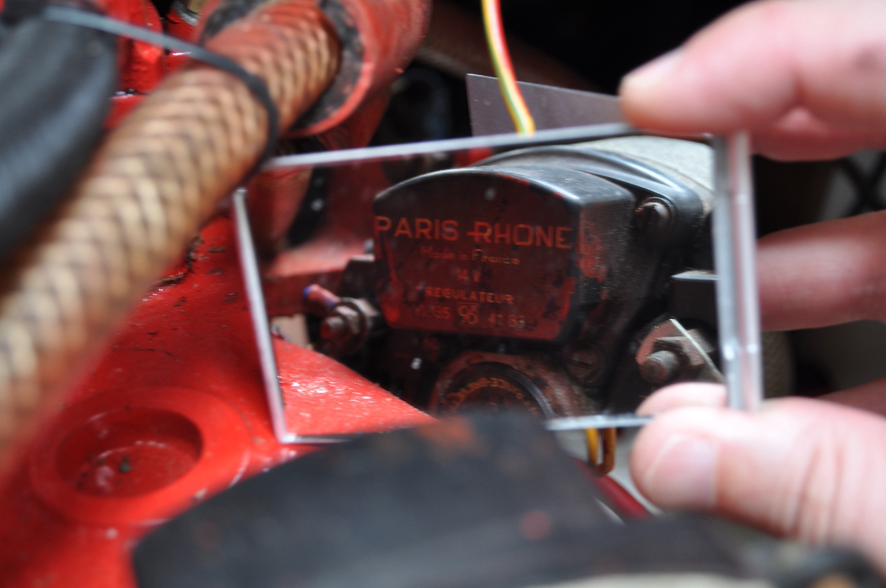
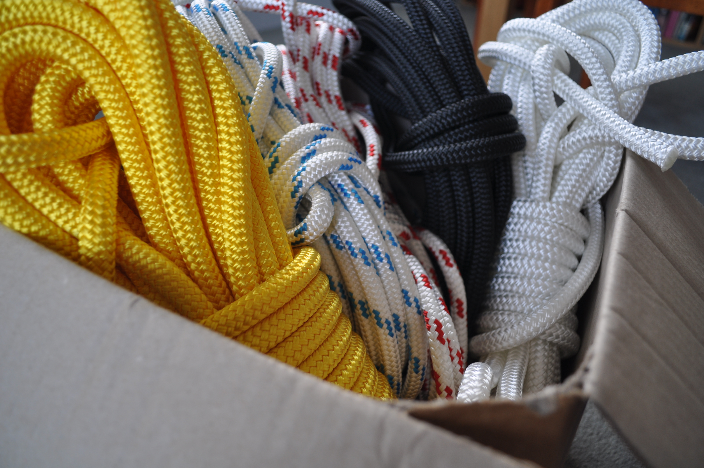
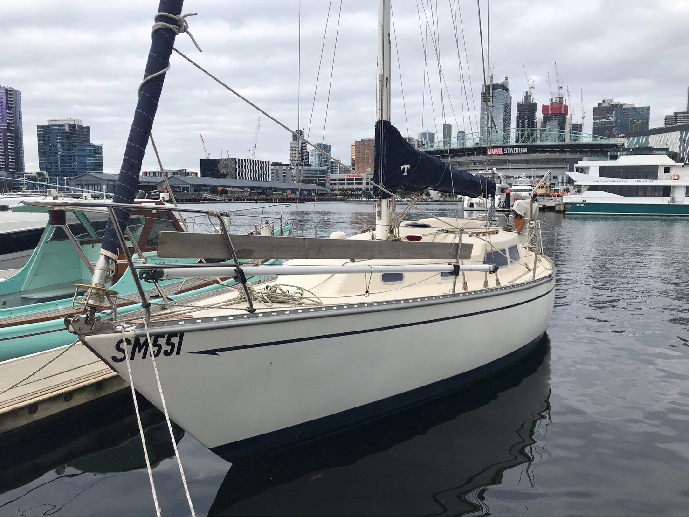
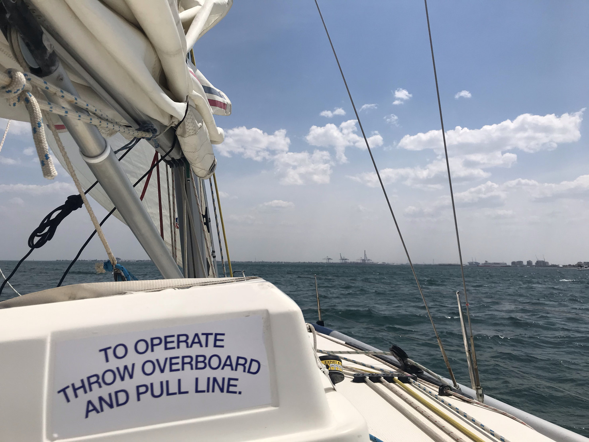

Tempo to do list
A small mirror is very handy V berth
- Recarpet or panel wall
- Replace corroded hatch handles (or hatch)
- Make wooden grates for locker bottoms
- Make grate to allow air circulation shelving
- Find way to secure items on shelves
- Revarnish
- Check windows for leaks
- Make wind scoop
Head
- Replace electric pump with manual foot pump
- Replace sump pump and add filter
- Composting toilet?
- Refit mirror... move it to a useful position
- Hang shower curtain
- Check bolts around boot
- Check mast foot
- Change drawers into fabric dividers?
- Replace showerhead
Main cabin/galley
- Clean lockers, add wooden grates for bottoms
Fuel/water jerry cans- Fuel level indicator?
- Clean cupboards
- Plan storage
- Replace head door lock with one that can lock/open from both sides
- Replace cushions
- Refit locker cover panels
- Dry water tank locker
- Replace flares
- Remove old radio
Repair fuel stop- Fit fuel stop cable
Remove old fan- Clean up wiring
- Fill screw holes in fibreglass
- Improve bilge covers... how?
- Dust pan and brush
- Test oven
- Organise plate areas
- Remove speakers
- Find and repair window leaks
- Check sink pump - switch to foot pump?
- Fit end panels for quarter berth
- Make tool roll
- Map electrical system
- Remove fridge
- Fix battery 2 test indicator
Exterior
- Fix companionway squeak
- Make smaller washboards - 3 parts?
- Fix gas bottle locker
- Remove outboard, consider life raft+dinghy
- Mouse shackles
- Solar panel mount?
- Replace 2 large winches
- Replace plastic cleats
- Whip lines
- Fit solar power system
- Check dinghy and outboard
- Check sail bag and sail
- Check sun shade/canopy
- Bit for jib track? What did I mean by this
- Wooden block to stop traveller sliding
- Fix masthead lights
- Replace halyards with rope, change sheaves
- Clean after locker
- Name the bloody boat
- Replace prop anode (April)
- Defoul, paint
References
New linesWe arrive safely!Sailing lessons